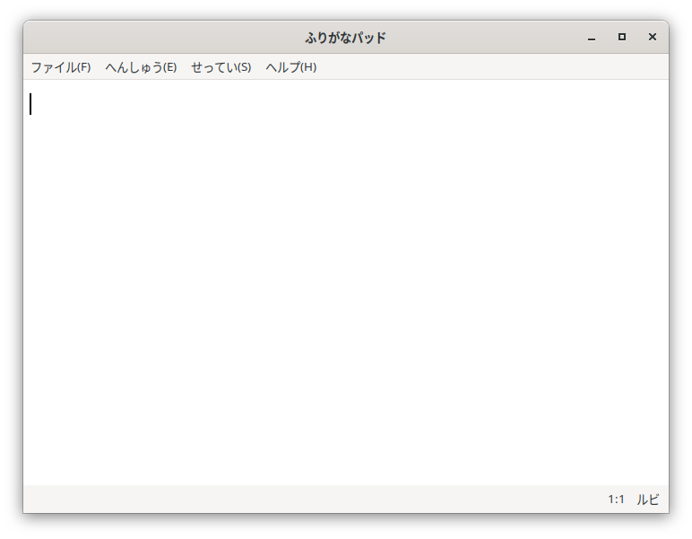
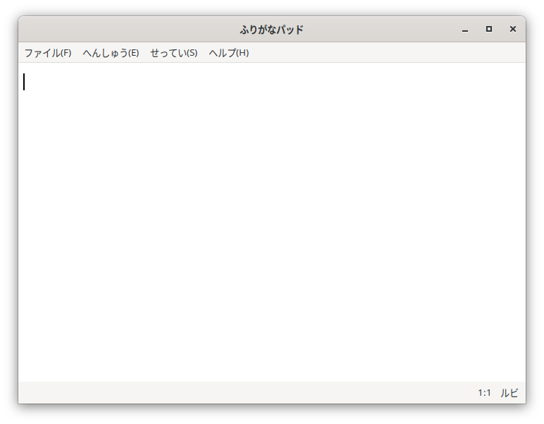

ひらがなIMEとの連動
「ふりがなパッド」は、「ひらがなIME」の漢字辞書の設定に応じて、メニューの表示をきりかえます。
漢字辞書が小学校１年生から６年生用であれば、小学生むけのメニューを表示します。

中学生用以上の漢字辞書が設定されていれば、通常のメニューを表示します。

どちらのメニュー表示になっていても、つかえる機能はおなじです。
「ふりがなパッド」は、「ひらがなIME」の漢字辞書の設定に応じて、メニューの表示をきりかえます。
漢字辞書が小学校１年生から６年生用であれば、小学生むけのメニューを表示します。

中学生用以上の漢字辞書が設定されていれば、通常のメニューを表示します。
どちらのメニュー表示になっていても、つかえる機能はおなじです。